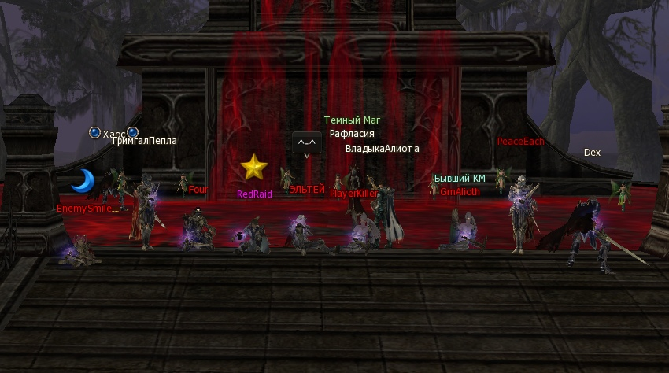
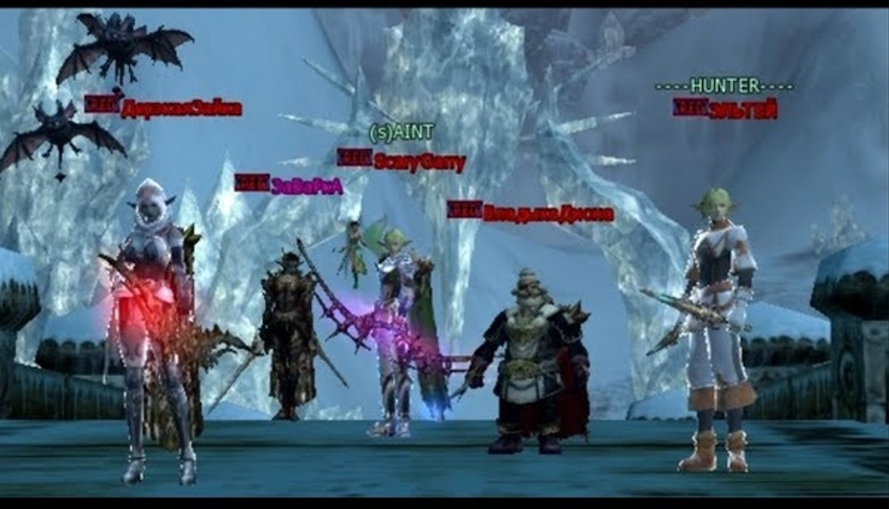
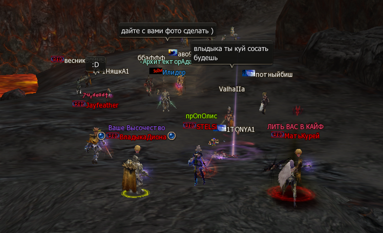
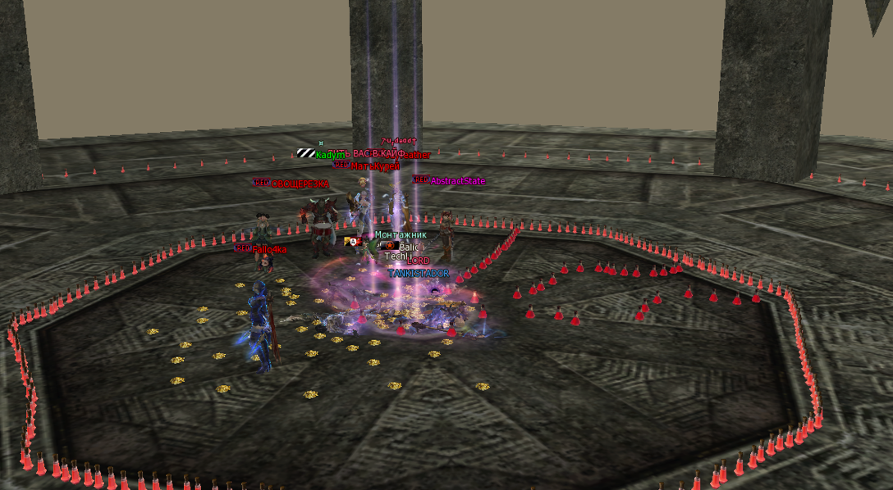
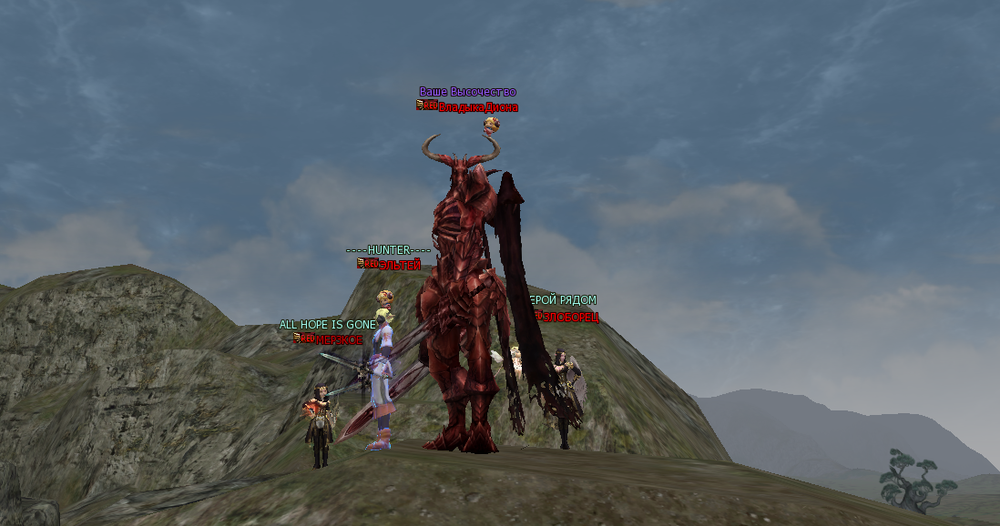
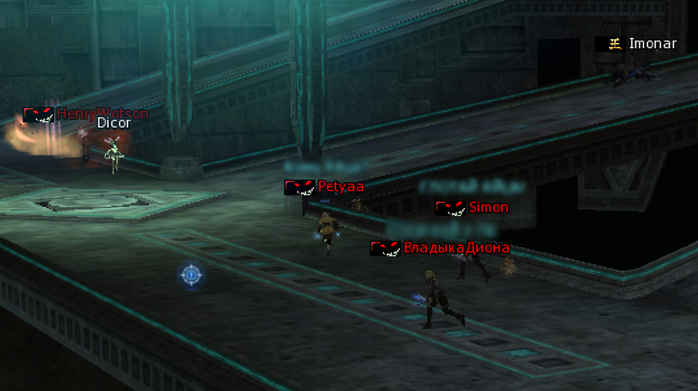
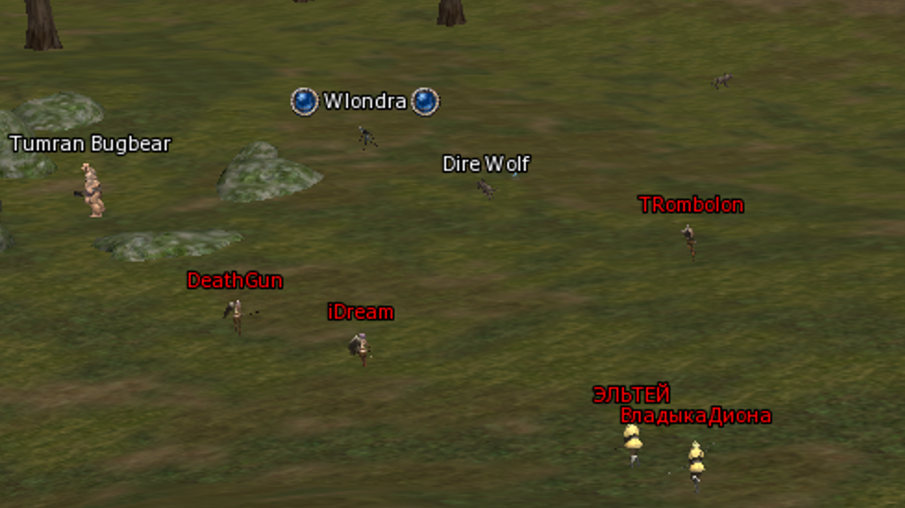
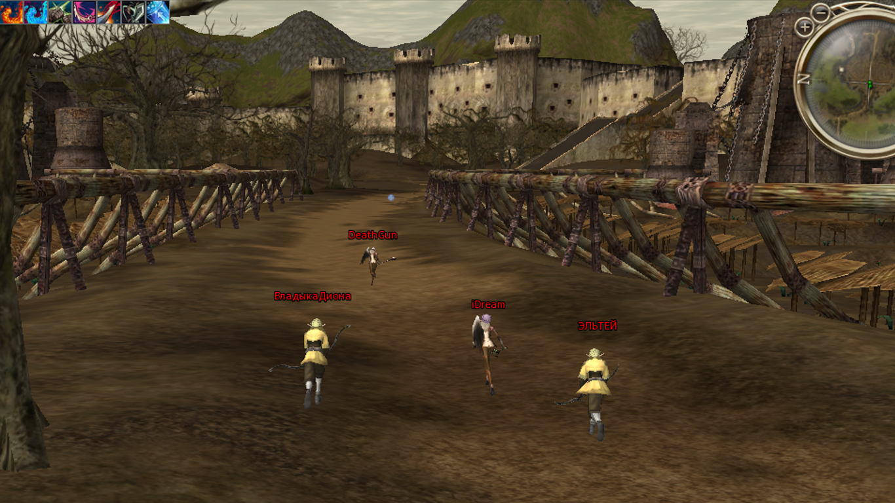
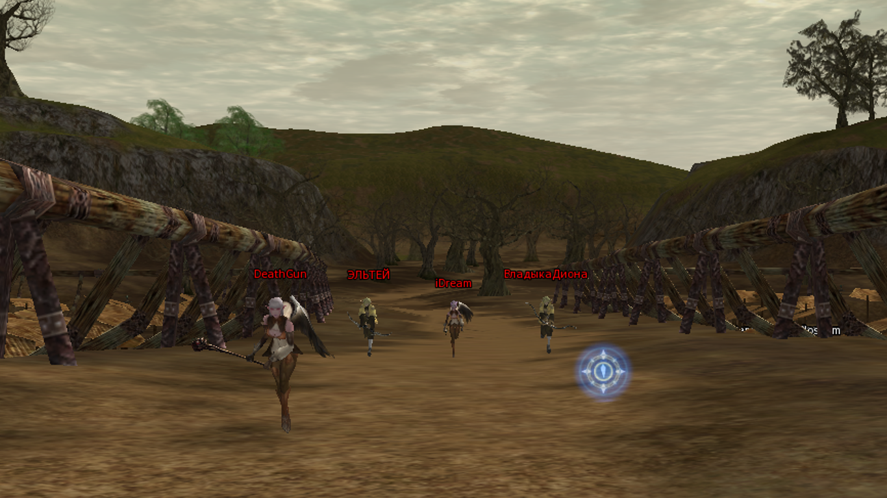

О нас
Мир игры забит рабами шаблонов. Они живут в вечной суете и боятся сделать шаг в сторону. Но когда они сталкиваются с RED RAID, вся их мнимая правильность теряет иллюзию, оставляя лишь жалкий мат в ПМ. Для нас PK — это не агрессия. Это манифест свободы и воли. Мы доказали, что можно выйти из стада и управлять своей игрой по праву сильного. Шилен не спросит, в каком ты шмоте и какого лвла, с собой ты их не заберешь.








